UNDERSTANDING GRAPHICS IN NES AND SEGA MASTER SYSTEM
by RafikiPedia
INTRODUCTION
I've written this document in order to show and explain how these two mythical consoles were able to run such wonderful games, despite of their hardware limitations. Or better said, making the most out of their hardware limitations.
I've splitted this material into two big sections concerning each one of the consoles and later going further into each of their features. I've tried to be as clear as possible, also bringing up screenshots and animations of every mentioned example.
If you find this document useful, please let me know. Writing it took me a lot of time, so the least that I can beg is a little mention. Feel free to send me an email for any corrections and/or comments, but please do not ask me for any ROMs. That's on your own account and I don't want to get involved in any kind of legal troubles.
Well, enough of presentations. Let's start by reviewing some common terms that are broadly used in graphics:
GLOSSARY
Bit
Stands for Binary digIT. It's the smallest possible data unit, the principle of the binary system and the foundation of the whole world of electronics. Just 1 and 0. On, off. Yes, no... Well, you get the idea.
Bpp
Means Bits Per Pixel. Very straightforward: it specifies how many bits are needed to represent the color of a single pixel. In other words, the total combinations of colors is 2^n, being n the number of bpp. Classic videogames consoles tipically have between 2 and 4 bpp: NES has 2 (4 colors per pixel) and Sega Master System has 4 (16 colors per pixel).
Byte
Stands for BinarY TuplE (at least that's what some people claim). A byte is simply a sequence of 8 bits, i.e. an 8-element combination of ones and zeroes. Prefixes can be added to it and thus forming kilobytes, megabytes, gigabytes, terabytes...
NOTE: This nomenclature is technically inaccurate, for "kilo" means "one thousand" and 1 kilobyte strictly equals 1024 bytes (2^10). But that's the way it's been named (who I am to blow against the wind?)
Hexadecimal
(Or just hex for friends). Hexadecimal means "sixteen" and is a numerical system just as binary and decimal, widely used in electronics - and romhacking, of course. This system uses digits from 0 to 9 but also letters from A to F (upper or lowercase, is the same), where A equals the decimal 10, B is 11, C is 12... up to F that equals 15. Then it begins with two digits: 10 equals 16, 11 is 17, and so on. Hex numbers in ROMs commonly have 2 digits and, in order not to mess around with decimals, the $ or 0x prefixes are used. Besides, hex numbers are also frequent to code colors - for example, #08A1FC.
NOTE: Windows Calculator has embedded a practical system converter. We are utilizing it to make calculations in this document.
Pixel
Stands for PICture ELement. This shouldn't need any explanation, as today we see pixels everywhere. Anyway, it's worth mentioning that a pixel is not an absolute unit as meters or inches - its size depends on the device. The size of a single pixel in your TV screen is actually bigger than a pixel in your smartphone, even when both resolutions are equal.
Scanline
It's an horizontal line of pixels, and many of these lines draw the image shown on screen. Hence, a screen with a resolution of 640x480 has 480 scanlines.
Tile
It's a graphical square unit. Its size can be 8x8, 16x16, 32x32, 64x64. Tiles in romhacking refer mostly to 8x8 pixels.
NES
Given that a TV was involved, the NES system had a resolution of 256x240 for PAL and 256x224 for NTSC. The vertical 16 px difference is because NTSC cuts off 8 pixels from the top and bottom rows; these areas were not very important, as they used to be just background. Therefore, the standard NES resolution is considered to be 256x240.
All the heavy graphic work inside NES was done by this little guy with 10 KB of memory, the PPU (Picture Processing Unit). The console has just 2 graphic layers - one for the sprites and one for the background - and a palette of 54 colors in total.
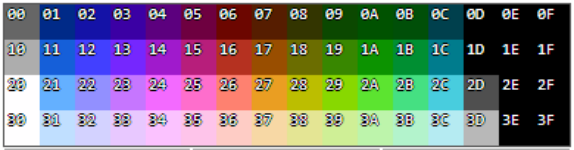
NES colors indexes
"Wait a minute! There are 64 there!"
Right. Even though the indexes are 64, the real colors are fewer. As you can see, both whites are identical ($20 and $30), black is repeated eight times and there is a "darker-than-black" index ($0D) that wasn't used because it could bring problems to TVs. So we are left with 54 colors. The truth is, NES can only reproduce up to 13 colors simultaneously for each layer. These palettes are divided into 4 subpalettes of 3 colors plus one backdrop color, which has the first index and must be repeated in every subpalette. In the sprites layer, this backdrop color is transparency; in the background layer, it's some default color (a sky color, for example).
Subpalettes scheme
Layer
Hex
Palette 0
Palette 1
$0
$1
$2
$3
$4
$5
$6
$7
Background
$3F00
Transparent
Color 1
Color 2
Color 3
Transparent
Color 4
Color 5
Color 6
Sprites
$3F10
Default
Color 1
Color 2
Color 3
Default
Color 4
Color 5
Color 6
Subpalettes scheme
Layer
Hex
Palette 2
Palette 3
$8
$9
$A
$B
$C
$D
$E
$F
Background
$3F00
Transparent
Color 7
Color 8
Color 9
Transparent
Color 10
Color 11
Color 12
Sprites
$3F10
Default
Color 7
Color 8
Color 9
Default
Color 10
Color 11
Color 12
NOTE: Colors aren't necessarily the same in the background and in the sprites.
Hence the 13 colors for each layer. Background and sprite palettes are located in VRAM (Video Random Access Memory - a 2 KB part of the PPU) at the $3F00 and $3F10 offsets respectively and color indexes occupy just 1 byte.
Now is when we're going to split our analysis, starting with the background because it is more difficult. Fear not, because once we've learned about backgrounds, the sprites part will be easier.
BACKGROUND
Let's take the DuckTales game as an example:
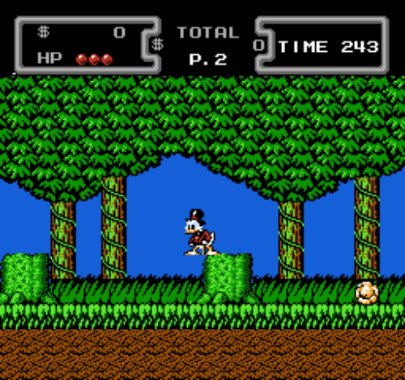
Screenshot from DuckTales
After removing the sprites, we're left with this:
Hey, where did Scrooge go??
As it was stated before, backgrounds have 4 subpalettes just like sprites, but in this case the shared one is a backdrop color. The palette of our picture is as follows:
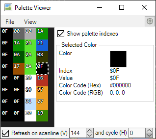
Background palettes - the last four rows are from the sprites, so we'll just ignore them for now
We can clearly see that there are 4 palettes and just 9 colors: $00, $10, $1A, $2A, $11, $0A, $08, $17 and $0F. We can also observe that the backdrop color is precisely $0F, the first index.
Backgrounds are made up from tiles of 8x8 px. The number of tiles is 32 for the width (256 / 8) and 30 for the height (240 / 8), summing up a total of 32 * 30 = 960 tiles. They are grouped in 16x16 px areas called blocks or metatiles, which means that the screen has a total of 16 (256 / 16) horizontal and 15 (240 / 16) vertical blocks. That sums up to 16 * 15 = 240 blocks. Now, if we add a grid for the 8x8 tiles and another for the 16x16 blocks, our image looks like this:
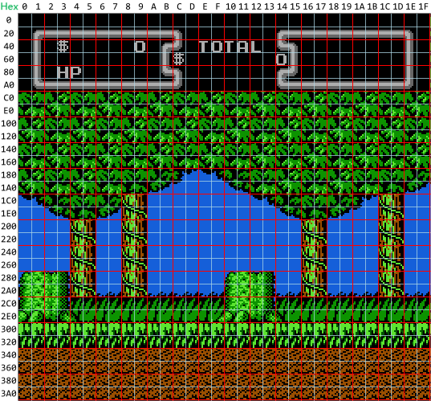
Grids of 8x8 (gray) and 16x16 (red)
The axis numbers are hexadecimal and can be added together to specify a position in the grid: for example, the tile with the 'H' is at the $80 + $3 = $83 position.
The fact is, each block must have a unique palette and so all its inner tiles must share the same colors. This is why environments have a "blocky" appearance. Observe here how these two tiles are different but belong to the same block and have the same palette:
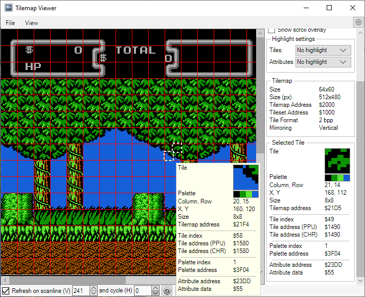
A block's palette - observe how the tiles use different colors, yet the palette is the same
Backgrounds in NES are built upon 4 components that handle specific aspects: tiles, color, position and attributes. Let's dig into the first of the background components, the pattern tables.
Do you want to continue?
YES
(sorry, there's no NO button).
1 - Pattern Tables: CHR
The pattern tables comprehend an area of the PPU memory that contains the tiles for both background and sprites. For the background, this data is also known as CHR, which comes from character because it's related to how text is displayed.
The tiles of our picture are these:
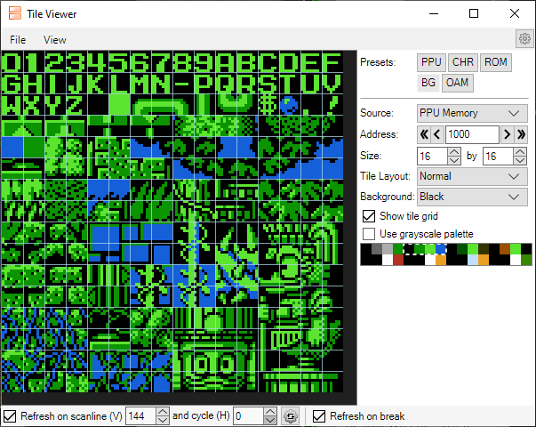
The X Tiles - wasn't that the name of the show?
As you can see, there are some tiles of the alphabet and from the sprites, but these are not the real colors in the game. Have you noticed that the palette is the same as before? Here we've forced the palette to match some colors of the game, but you can choose any available palette, even grayscale.
Well, each tile has 16 bytes divided into 2 planes (8 bytes each) and each pixel needs 2 bits to be represented, so for a single pixel you can choose only one color of a maximum of 4 (2^2). Let's analyse this tile that has all 4 colors of its palette:
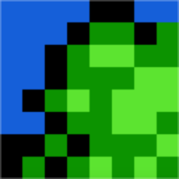
The tile...
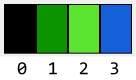
...and its palette
The numbers beneath the palette are the indexes, which leaves us with:
Pixel indexes
We are going to make some calculations in binary system, so bring up the Windows Calculator or whatever tool convertion that you like. First, we must convert each decimal index to a 2-digit binary number:
Indexes
Decimal
0
1
2
3
Binary
00
01
10
11
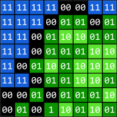
Binary indexes - looks like Matrix!
We said that each tile has 2 planes - better known as bitplanes. The first plane controls the low digit (the rightmost) of every binary number and the second controls the big digit (leftmost). For example: with 10, the first bitplane will control the 0 and the second will control the 1. We can reuse the previous diagram and represent each bitplane like this:
First plane (bitplane 0)Second plane (bitplane 1)
Considering that each row is 1 byte and reading bits left to right, we are getting two sequences of 8 bytes:
Bitplane 0
Byte
$00
$01
$02
$03
$04
$05
$06
$07
Binary
11110011
11101101
11010011
11011100
10101000
11011001
00101110
01010101
Hex
$F3
$ED
$D3
$DC
$A8
$D9
$2E
$55
Bitplane 1
Byte
$00
$01
$02
$03
$04
$05
$06
$07
Binary
11110011
11100000
11001100
11000011
10010111
11000110
00000001
00001010
Hex
$F3
$E0
$CC
$C3
$97
$C6
$01
$0A
Finally, the 16 bytes sequence is:
F3 ED D3 DC A8 D9 2E 55 F3 E0 CC C3 97 C6 01 0A
There we have the code for our tile!
But wait, there is something important to consider before moving on: the real colors are NOT YET defined. We will see later that choosing the palette is a task for another component. For now let's continue with the component that manages how tiles are distributed along the background.
2 - Nametables
Remember that it takes 960 tiles to fill the background?
"That's a lot of tiles! Developers must have had a lot of work filling every environment with these LEGO-like stuff!"
Don't panic - they didn't.
You must already know that videogames always repeat and reuse tiles and patterns to build maps and environments, and that's a great way to make the best out of the resources. Unfortunately, background tiles cannot be rotated or flipped horizontally nor vertically.
"But how do we tell the game to repeat and where to locate them?"
That's when nametables come into play.
A nametable is an area of the PPU, stored in VRAM, that distributes and assigns CHR tiles to each location on the screen. You could think that this should take 960 bytes, but thanks to repetition and reusability, it's fewer than that. Tile assignment is left to right, top to bottom, and positions are calculated by summing both values like we saw before. Our tile can be found twice on the screen, at $280 and $290 positions:
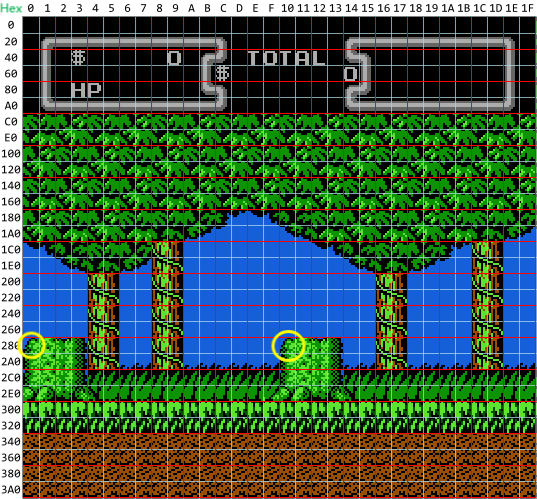
Locations of the tile
The values in the nametable depend on the index order of the CHR tiles. In our case it would be:
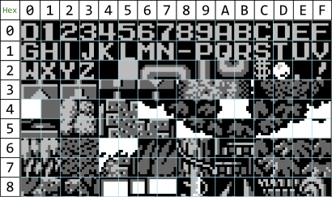
What happened to the colors??
Now that we know the tile indexes and that ours is $74, then the background will have this scheme:
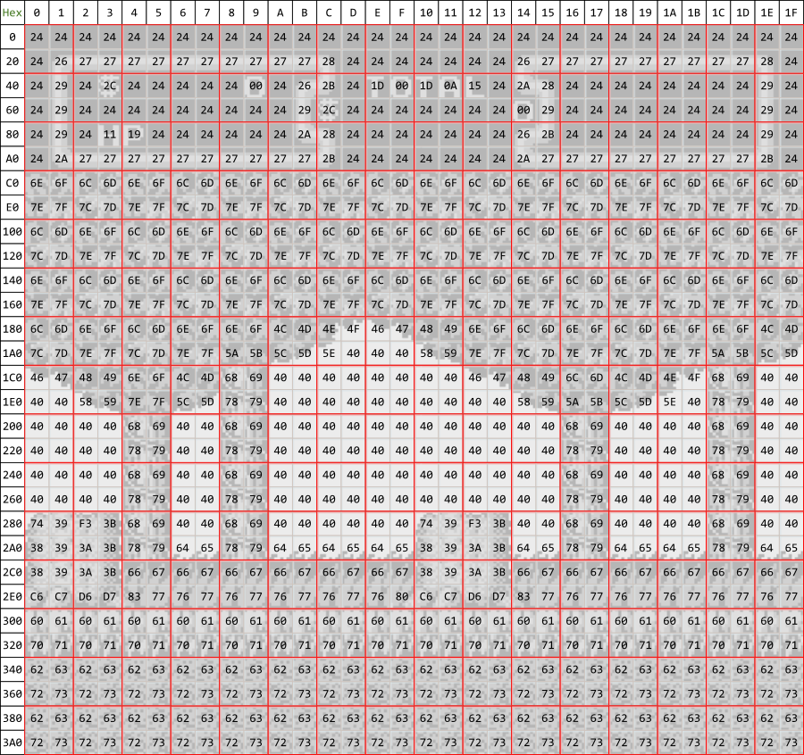
Nametable with tile indexes
In fact, NES has not just one but 4 nametables, arranged in a 2x2 pattern. Each one has 1024 bytes ($400) and are located at the $2000, $2400, $2800 and $2C00 VRAM addresses. Tiles have 960 bytes, so the remaining 64 are for the attributes table - we'll go in further detail later. Due to hardware limitations, only 2 nametables are used on screen at the same time (the others are just duplicates). These two active nametables can be stacked one on top of the other or side by side, which allows to a more efficient change of screen and smooth transitions in the horizontal or vertical axis. If it scrolls horizontally, it's called vertical mirroring; if scrolling is vertical, it's horizontal mirroring. In the first case, stacked nametables (one on top of the other) share the same tileset; in the second, side-by-side nametables share the same tileset. See examples of each one in Lode Runner and Ice Climber respectively:
Lode Runner
Lode Runner's first stage
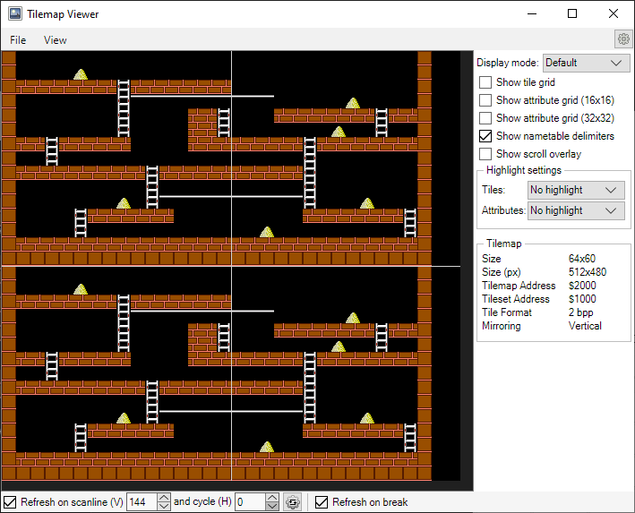
Lode Runner's nametables
Ice Climber
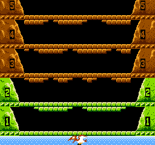
Ice Climber's first stage
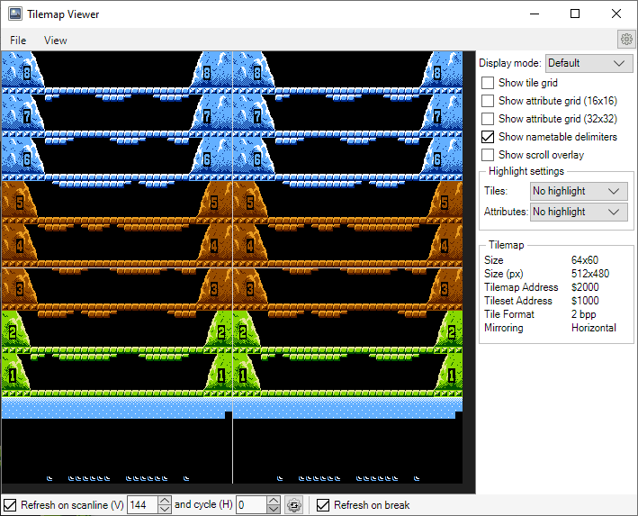
Ice Climber's nametables (fragment)
Most platform games employ horizontal scrolling, so vertical mirroring is more frequent. It's no exaggeration to say that NES got a huge popularity in platformer and shooter games, due to this feature. In a game like Lode Runner we have only two screens (nametables) but frequently levels seem to be have an infinite size: this is achieved by continuously updating the off-screen part of the nametables. Scrolling is controlled by a memory register at the $2005 address that determines which nametable to start with and how many pixels the screen must be moved. See how the beginning of BreakThru scrolls through nametables:
Nametable scrolling
Have you noticed how nametables update just before appearing on screen?
"Great, now we have located all the tiles! The canvas is ready. What's next, coloring?"
Yes. Let's move on with palettes, the third background component.
3 - Palettes
As it was said before, there are 4 palettes, each with 3 colors and one in common. Our DuckTales image has these:
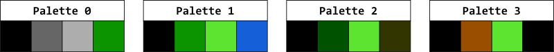
Background palettes
We saw that background tiles can't be flipped or rotated. Nevertheless, tiles can make interesting effects by changing palettes, for example when a wall has a darker section and the bricks have different colors. Watch this snapshot from Last Action Hero:
Look at those lights!
Observe how this scene repeats the exact same tile for the background city lights, changing just the palette.
Effects like this are applied everywhere. You surely have seen games where enemies have the same sprites but in different colors. Another fantastic advantage of the NES is that it can swap palettes on the fly while keeping the same tiles. Instead of wasting a lot of sprites to create a waterfall, palettes can be swapped to mimic a 'flow' effect. 'Night and day', 'lightning' or 'flashing' efects can be achieved in the same manner.
Look at the stars and water in the next screen - this game needs no presentation:
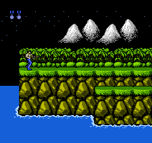
Twinkle twinkle little star...
The technique used is very simple, yet quite effective: while the palette remains the same, the last two colors are continously switched.
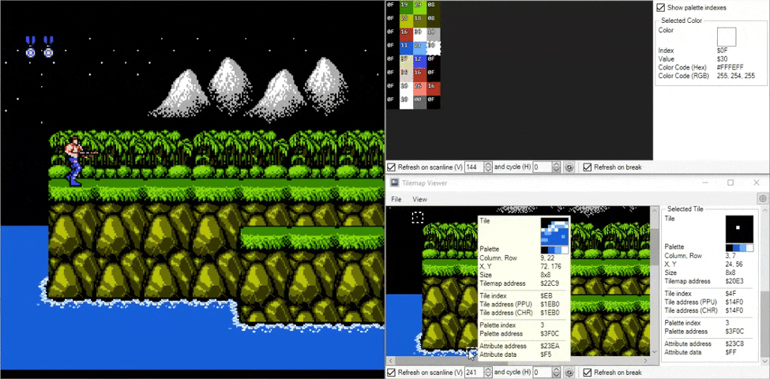
The twinkling effect on both the stars and the water is achieved by swapping the last two colors
A more evident palette change can be seen on the flashing letters at the title screen of Lunar Pool:
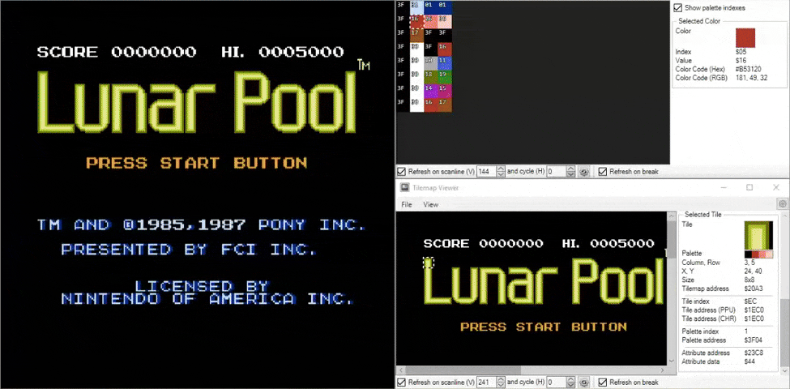
Changing palettes on the fly
OK, let's proceed to the last component, the one that defines what palettes must be used.
4 - Attributes
An attribute table is an array located at the end of each nametable and its main function is to assign one of the 4 palettes for each block - remember that blocks must have one and only one palette. Each table is arranged as 8x8 and has a size of 64 bytes ($40), starting at the $23C0, $27C0, $2BC0 and $2FC0 offsets.
The attributes table for the Ducktales picture is this:
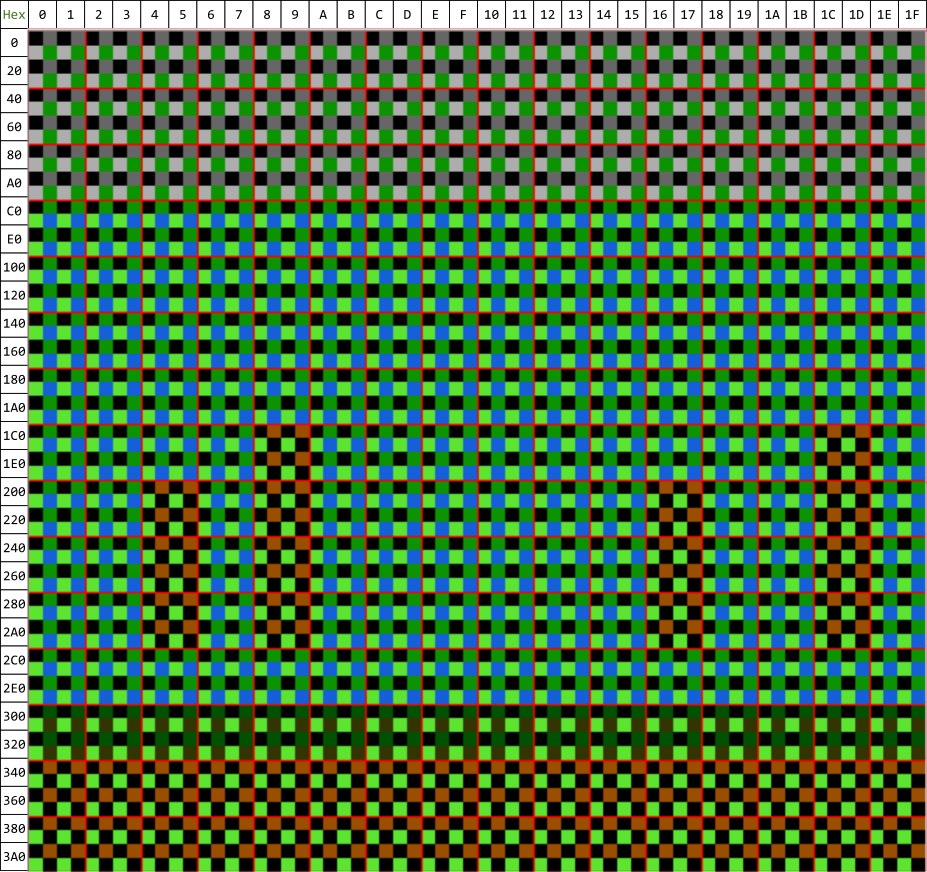
So many tiny squares!
Whoooa! This is so dizzy! Here the palette of every tile is shown, but it's kind of messy, isn't it? Let's clear it up a bit by showing just every block's palette instead:
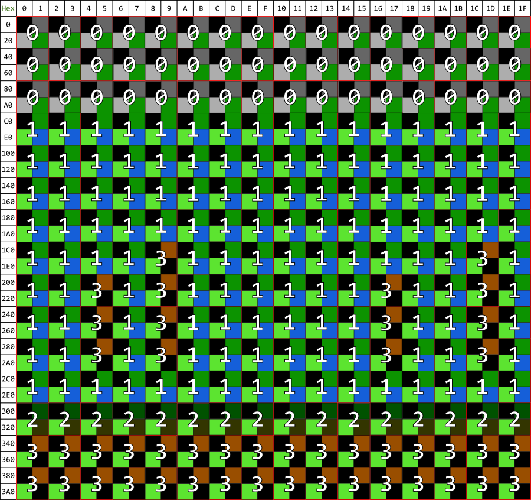
Much better!
This is how this attributes are really treated, occupying regions of 4 blocks (2x2 blocks = 4x4 tiles = 32x32 px). In turn, these regions are divided into four quadrants and each quadrant is given its corresponding palette index. Take a glimpse at the area starting at $1C2:
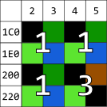
A 2x2 block area
The attribute byte that controls the palette of a region is built in a very particular way. The palette indexes must first be converted to binary and then read in this order: bottom-right, bottom-left, top-right, top-left (like a Z-shape).
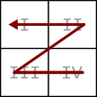
Z for Zorro!
Finally, the value of the byte is that sequence, converted to hex:
Value = bottom-right + bottom-left + top-right + top-left
Ladies and gentlemen, please fasten your seatbelts, for now we are taking a ride through the Three Numerical Systems. Be ready soon, because our bus leaves from Palette Indexes at 8 o'clock. We've considered them as decimal so far, so our first stop will be at Binary Sights. Do you remember the indexes expressed in binary? Here is a nice postcard to remind you:
Palette indexes
Decimal
0
1
2
3
Binary
00
01
10
11
Well, our next stop will be reading them like a Z-shape:
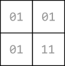
Binary palette indexes
Hence the byte for our region is 11010101.
Last stop! Prepare yourselves to convert it to hex. Ready? OK. The byte is (snare roll)... $D5!
Congratulations! You've sucessfully finished the tour!
Well, not quite yet. This is just the beginning. We're done with just 1 of the 64 attribute bytes, but it's enough to get the idea for the others.
"Phew! That was a long ride!"
OK, now that we've finished with backgrounds, let's get on with sprites. It's much simpler.
SPRITES
As you already know by now, sprites are the animated part of graphics: characters, objects, health bars, etc. If you see something that moves in the game, in most cases it's a sprite. I say in most cases and not always because there are some examples in which moving things are part of the background.
There's only one sprite layer in NES and a 16-color palette, divided into 4 subpalettes of 4 colors each. The first one is transparent and is repeated across all palettes - therefore the colors are 12 plus transparency. As with backgrounds, sprites can use any of the 4 color subpalettes but just only one. Sprite tiles typically have a square size of 8x8 pixels and the system can handle up to 64 sprites on-screen before visual flickering. In some games, you can find sprites of 8x16 px; you can still display 64 of these taller sprites, but in that case ALL sprites must have the same size.
For example, see this one from Astyanax:
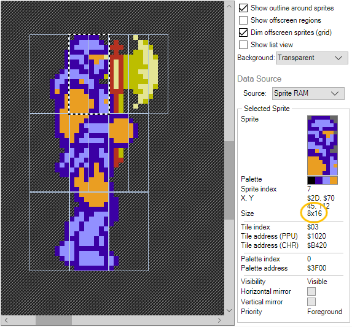
8x16 sprites - note that all have the same size
Flickering can also occur if more than 8 sprites are displayed across the same horizontal scanline. If so happens, those sprites that appear later in memory will not be rendered.
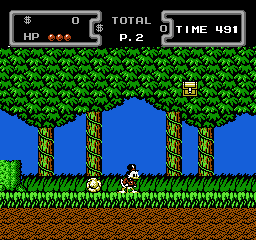
Watch the flickering at the grass scanline
Despite of this issue, an advantage of the NES is that sprite tiles can be reused by flipping them horizontally or vertically - but not rotated -, thus saving a lot of memory. Unlike nametables, sprites aren't bound to a grid, they are arbitrarily positioned on the screen and can also be placed over each other - it may provoke a flicker issue though.
Sprites are taken from a single 128x128 px image that has 256 tiles of 8x8 size, or 128 tiles of 8x16 size. Sprites are stored inside an internal memory section of the PPU called OAM (Object Attribute Memory). Each tile's data occupies 4 bytes, so the OAM bears a total of 64 x 4 = 256 bytes. These 4 bytes are ordered in a very strange way:
Byte 0 - The Y position of the upper side of the sprite.
Byte 1 - The sprite index number.
Byte 2 - The attributes: vertical and horizontal flipping, priority (in front or behind the background) and palette. The bits are referred as follows:
Byte 2
7
6
5
4
3
2
1
0
V
H
P
-
-
-
C
C
Reference
V
Vertical flipping (0 = off, 1 = on)
H
Horizontal flipping (0 = off, 1 = on)
Priority
0 = in front of the background, 1 = behind the background
-
Unused bits
C
Palette of colors - one of the four indexes
Byte 3 - The X position of the left side of the sprite.
Let's make a little zoom and observe each byte in detail:
Position of the sprite in X and Y axis is defined by bytes 3 and 0 respectively. Suppose that we want to locate a 8x8 sprite at the center of the screen. The coordinates are:
You can hide a sprite by moving it down and outside the screen, but bear in mind that you can't display a sprite on the first scanline or partially place it at the top of the screen. Neither can you have a sprite partially visible on the left edge.
Sprites may be flipped both vertically and horizontally. Flipping only changes the position of pixels inside the sprite - it doesn't affect its position on screen.
Priority allows effects for the sprite like being hidden by fog, blocks or vegetation, as in this Battle City example:
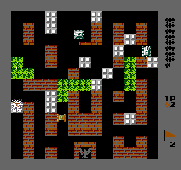
Hide, hide under the trees!
Besides, priority between sprites is defined by their addresses inside OAM: for example, when two sprites whose indexes are $38 and $3A, the first one will be shown at the front. For example, observe how Scrooge's face has transparency, is not aligned to the grid and is placed over other 4 tiles:
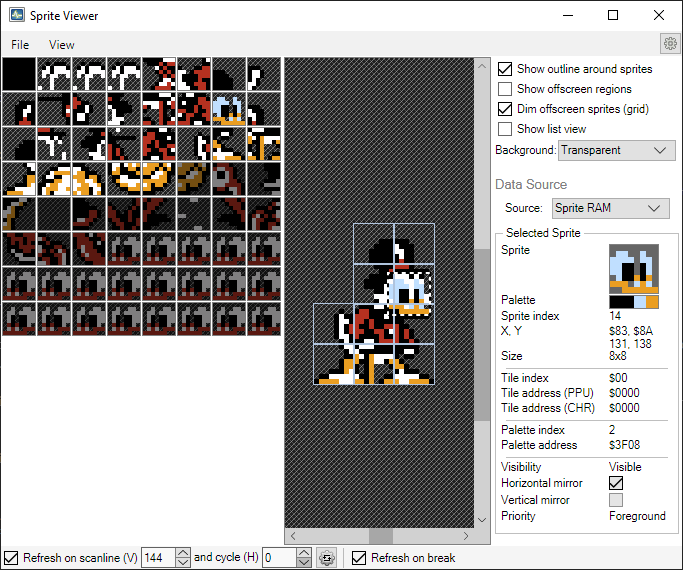
Scrooge's sprite - notice that horizontal flipping is checked
Other visual effects
Being independent from the background, another advantage of sprites is that they are not affected by scrolling. This is how HUDs remain at place while the screen scrolls left or right. Besides, backgrounds can be divided into several horizontal stripes that scroll at different speeds, thus allowing some great parallax effects and creating a sensation of perspective and velocity. See this example from City Connection:
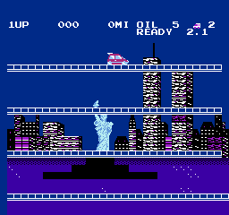
Take me down to the Parallax City
The floors couldn't be sprites because of the 64-limit, so they are made of tiles that are independent of the background picture. Now watch the different scrolling speeds of the water lines, the horizon and the clouds in this fragment of Teenage Mutant Ninja Turtles III - The Manhattan Project:
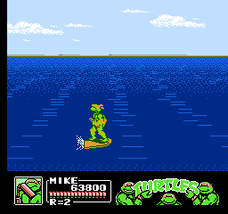
Cowabunga!
There are lots of other animation effects that can be applied. An interesting one is when background tiles actually change their pixels. The spinning coins in Super Mario 3 is a beautiful example of this technique: coins are actually part of the backgrounds and when Mario overlaps the screen location of the coin, the game replaces that tile with one from the background. Isn't it brilliant? Those developers were really geniuses!
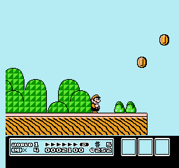
Coins in Super Mario 3
In the intro from Crystalis, swapping nametables creates a fire effect:
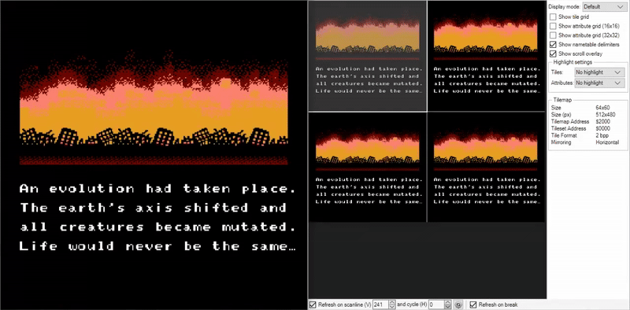
Swapping nametables
Another common and cool technique is called bank switching, which consists in pointing towards addresses of nametables or sprites tiles that are located in another part of the memory. In this manner, an entire section of the background can be animated by replacing tiles instantaneously.
Watch this rain effect in Shadow of the Ninja:
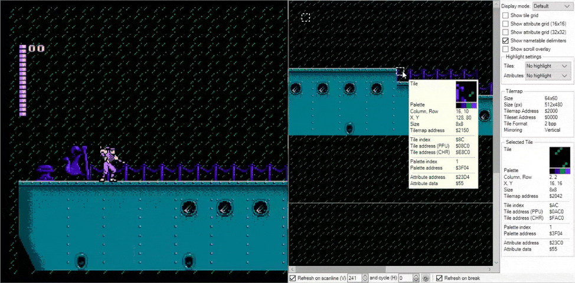
The rain is achieved by switching tile banks - look at the cord too
Bank switching can also produce a parallax effect, like the sky and flames in Batman - Return of the Joker:
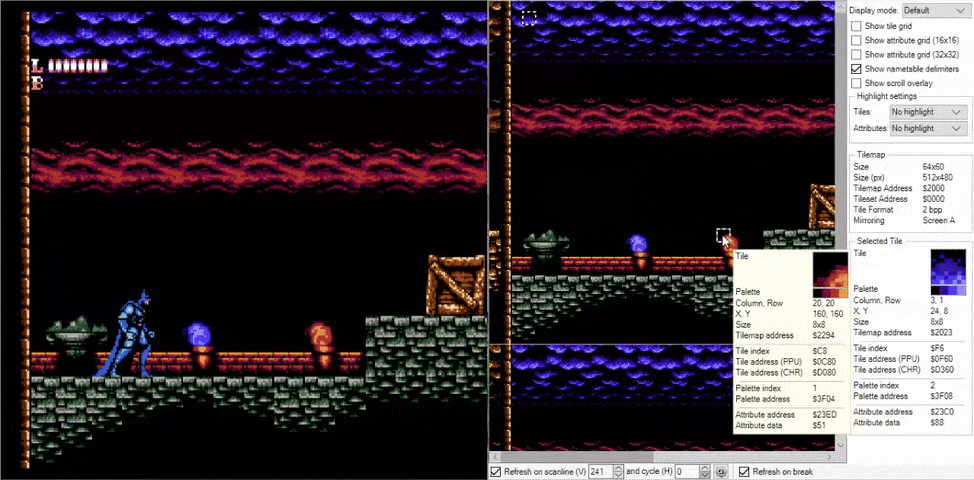
Those clouds are really fast!
The intro of Chaos World is a marvelous example of the use of many techniques: notice the "swaying" effect on the magician, the parallax effect (the castle are sprites) and the sky changing due to bank switching:
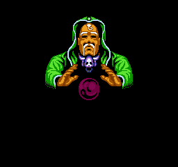
Chaos World intro
Phew! We've been through so much just to see how graphics are made in NES games. But be happy, it really was worth the effort because fortunately these principles apply in similar ways to other consoles. Moreover, now you can better understand terminology and debuggers of the emulators.
Let's take a break to review the main characteristics of this console:
Colors: A total of 54 colors but only 26 on-screen at a time (13 for the sprites and 13 for the background). The palettes are splitted into 4 subpalettes of 4 colors, the first one being a backdrop that is repeated in every subpalette.
Color depth: 2 bpp (2 bitplanes) - 4 colors per tile.
Background:
Just one layer.
4 nametables - only 2 active on screen.
12 different colors plus backdrop.
8x8 px tiles.
The complete size is 32x30 tiles (960).
Tiles can't be flipped or rotated and must be aligned to the grid.
Tiles are grouped in blocks of 16x16 px (2x2 tiles). Tiles in the same block must all have the same 4 color palette.
Can be horizontally splitted into different bands with independent scrollings (but not vertically).
Colors can be changed on the fly, swapping between different palettes (as an animation effect).
Background tiles can be animated as alternatives for sprites.
Sprites:
Just one layer.
12 different colors plus transparency.
8x8 px or 8x16 px tiles - only one size at a time.
.
A single tile has 4 bytes: position, tile index, palette, priority.
Maximum of 8 tiles per horizontal scanline and a maximum of 64 on screen at the same time.
Arbitrarily positioned - not bound to a grid.
Sprites can be flipped horizontally and/or vertically (but not rotated) and can be overlapped by tiles from the background.
Not affected by scrolling.
Sprites are taken from a single 128x128 px image of 256 tiles of 8x8 px size, or 128 tiles of 8x16 px size.
SEGA MASTER SYSTEM
All in all, the Sega Master System has a lot of things in common with the NES, so we will be using many terms that have been already explained.
SMS had a resolution of 256x192 px for NTSC and 256x224 px for PAL TVs, being this last one the standardized resolution. This represents a true 4:3 aspect ratio, so the pixels aren't so stretched as in NES.
The graphics processor was the VDP (Video Display Processor) and SMS graphics are also divided into 2 components: background (nametable) and sprites. The total palette of colors is 64 but only 32 can be shown simultaneously, and each layer has 16 colors - sprites have 15 plus transparency. An interesting fact is that, unlike the NES, palettes aren't split into subpalettes and the background can utilize any color of both palettes:
SMS colors palette
Colors are directly codified in 1 byte in RGB format: the first 2 bits are unused and each of the remaining 6 specify the levels for every RGB channel:
Color byte
Bit
7
6
5
4
3
2
1
0
Color
Unused
R
G
B
The 2 bits of each channel define one of 4 levels of intensity:
Intensity
Bit
Hex code
RGB code
00
00
0
01
52
82
10
AD
173
11
FF
255
For example, the following hue of pink is coded as 00110110, corresponding to R = 255, G = 82, B = 173. Or expressed in hexadecimal code: #FF52AD.
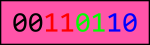
(255, 82, 173) = #FF52AD
BACKGROUND
SMS has a unique background layer and the full palette has 32 indexes, where the first 16 ($00 to $15) are exclusively for the background and the other 16 ($16 to $31) are for the sprites. Nevertheless, backgrounds can swap palettes on the fly and use any color of both palettes. A major difference with NES is that Master System doesn't divide the main palette into subpalettes, so any background tile can have any of the 32 colors available on screen.
See this snapshot of Castle of Illusion Starring Mickey Mouse:
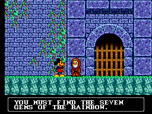
How colorful!
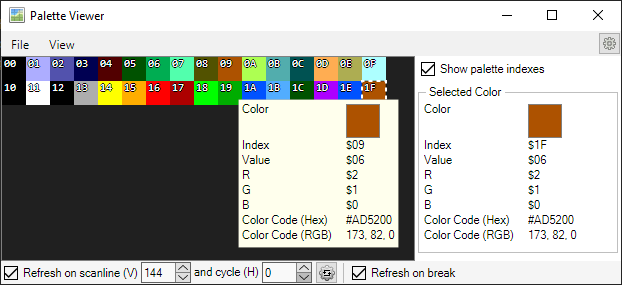
Screen palettes - observe how both have a color in common
Unfortunately, Master System has just one nametable. Background tiles have a size of 8x8 px and can be flipped both horizontally and vertically but not rotated. They are stored in VRAM up to a number of 512, but a maximum of 488 can be used. The nametable has a size of 32x28 words in a 256x224 resolution. But what is a word? It's a 16-bit value that defines each tile's attributes:
Nametable word
15
14
13
12
11
10
9
8
7
6
5
4
3
2
1
0
-
P
C
V
H
N
Reference
-
Unused (some games use these bits as flags for collision or damage)
P
Priority - When set to 1, the tile will be placed in front of the sprites
C
Palette select - When set to 1, the tile will use the sprite palette
V
Vertical flipping
H
Horizontal flipping
N
Tile index - any of the 512 available: 0-511
You can think of this sequence as 2 bytes, or a word being equivalent to a tile, so a fullscreen background has a total of 896 tiles! But of course, many of them are repeated.
Given that the palette is the same all across the screen, there aren't any 16x16 blocks or 32x32 regions as in NES. Furthermore, attribute tables don't make any sense either, because tiles are more "independent" and aren't restricted to a subpalette. Each tile is composed of 4 bitplanes (4 bpp) and each bitplane has 1 byte, so each tile has 32 bytes (8 rows of 8 bits = 8 bytes, and 8 * 4 = 32 bytes). Besides, each pixel has one of the 16 colors, so a single tile can have up to 16 different colors. Differently from NES, bytes in Master System are stored not one bitplane at a time, but row-by-row instead:
Bytes per row
Row
Bitplane
0
1
2
3
0
r0b0
r0b1
r0b2
r0b3
1
r1b0
r1b1
r1b2
r1b3
2
r2b0
r2b1
r2b2
r2b3
...
...
...
...
...
7
r7b0
r7b1
r7b2
r7b3
OK, let's see again how the background from the last picture is formed:
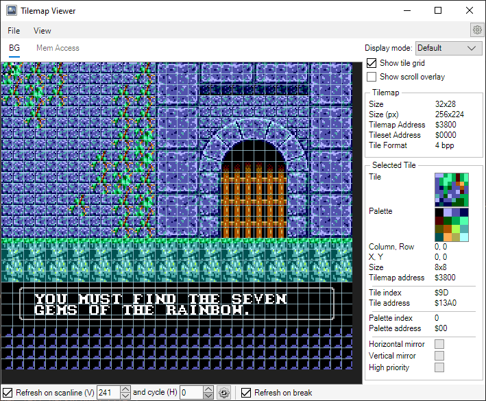
Background tiles
We'll take the first tile and study it like we did before:
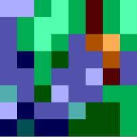
The upper left background tile...
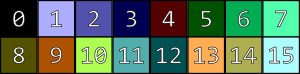
...and its palette
Notice that the first index is the backdrop color. To convert the palette indexes to binary, we'll need 4 bits this time, because 16 = 2^4 (remember that SMS has 4 bpp):
Palette indexes
Decimal
0
1
2
3
4
5
6
7
8
9
10
11
12
13
14
15
Binary
0000
0001
0010
0011
0100
0101
0110
0111
1000
1001
1010
1011
1100
1101
1110
1111
So the palette turns to:
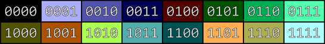
Palette with binary indexes
And the tile:
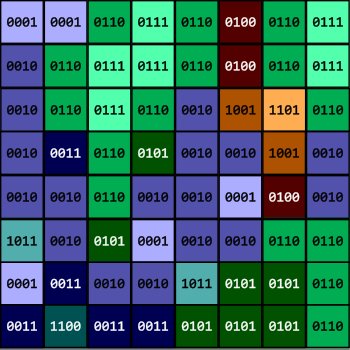
Tile's palette with binary indexes
As we already know the process, let's skip right to the bitplanes:
Then we write the bytes of every bitplane row by row:
Bytes per row
Row
Bitplane
0
1
2
3
0
11010001
00111011
00111111
00000000
1
00110001
11111011
01111111
00000000
2
00100110
11111001
01110011
00000110
3
01010010
11101101
00110000
00000010
4
00000100
11111001
00100010
00000000
5
10110000
11001111
00100011
10000000
6
11001110
01111001
00000111
00001000
7
10111110
10110001
00001111
01000000
And finally, convert them to hex to read each row in order:
Hex bytes per row
Row
Bitplane
0
1
2
3
0
$D1
$3B
$3F
$00
1
$31
$FB
$7F
$00
2
$26
$F9
$73
$06
3
$52
$ED
$30
$02
4
$04
$F9
$22
$00
5
$B0
$CF
$23
$80
6
$CE
$79
$07
$08
7
$BE
$B1
$0F
$40
NOTE: This time the colors are the real ones in the game.
Congratulations! You've just coded the 32 bytes of the first tile! Now you must repeat the process with every tile!
"What!? You gotta be kidding!!"
Well... yes. No way we're gonna spend so much precious time!
SPRITES
In general, sprites are more restricted than backgrounds. Even more, sprites are limited by the number of background tiles. As with NES, the SMS system can reproduce up to 64 sprites at the same time and 8 on the same scanline before flickering. Look at this occurence in Aladdin:
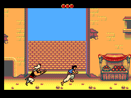
Observe the top of the barrel
Now, VRAM can store up to 256 sprites but can only show 64, so the remaining 192 can be used as background, making a maximum of 448 background tiles. Nevertheless, as they can be located on top of each other, using background tiles instead of sprites can be a smart method to avoid flickering.
The palette for sprites has 15 colors plus transparency, with indexes spanning from $16 (reserved for transparency) to $31 and, unlike backgrounds, they are restricted to use only this palette. Unfortunately, sprites can't be flipped or rotated. The common sprite size is 8x8 px, although you can find 8x16 too. Look at the hero in Wonder Boy in Monster World:
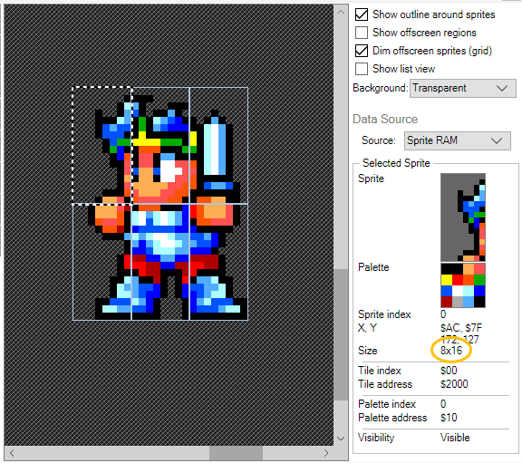
Go get them, big boy!
Each sprite tile has 4 bytes:
Sprite byte
Byte
Description
0
Y position
1
X position
2
Tile index (0-255)
3
Flags - Priority, palette, etc.
However, SMS has an awesome feature under its sleeve: the VDP has a control bit that doubles the size of the sprites, turning 8x8 tiles into 16x16 or 8x16 into 16x32 and generating a "zoom" effect. Keep in mind that this mode doubles the size of all sprites (I haven't found an example of this feature - if you know of any, please let me know and I'll include it).
Other effects
Let's see some examples:
Palette swapping:
X-Men - Mojo World
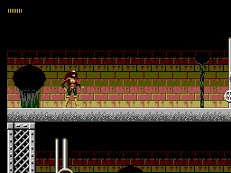
The water flowing from pipes
Bank switching:
Shinobi
The ninja's eyes are tiles that change banks
Parallax:
As with NES, backgrounds can also be sliced into horizontal fragments in order to create parallax effects:
Renegade
Different bands scrolling at different speeds
Stop your bike right there and see this! We have something very interesting here: the upper section of the motorbike (the one which overlaps the brick wall area) are sprites, but the lower (the road gray area) is background!
Hey, you've sliced me in half!Background tiles
Background overlapping sprites:
Wonder Boy III - The Dragon's Trap
Don't run and hide!
Well, that was a quick overview of some effects that can be generated by the SMS system. And like we did before, it's time for an overview of its graphical characteristics.
Colors: A total of 64 colors but only 32 on-screen at a time (16 for the sprites and 16 for the background). Background can use any of both palettes.
Color depth: 4 bpp (4 bitplanes) - 16 colors per tile.
Background:
Just one layer.
1 nametable.
32 colors: the own 16-color palette of the background and the other of the sprites.
8x8 px tiles.
The complete size is 896 tiles (32x28) for the 256x224 resolution. The number of tiles can vary - background can also use sprites tiles! - up to a maximum of 488 on screen.
Tiles can be flipped horizontally and vertically but not rotated and must be aligned to the grid.
Can be horizontally splitted into different bands with independent scrollings (but not vertically).
Colors can be changed on the fly, swapping between different palettes (as an animation effect).
Background tiles can be animated as alternatives for sprites.
Sprites:
Just one layer.
15 different colors plus transparency - can only use sprite's palette.
8x8 px or 8x16 px tiles - only one size at a time.
A single tile has 4 bytes defining position, tile index, palette and priority.
Maximum of 8 tiles per horizontal scanline and a maximum of 64 on screen at the same time.
Arbitrarily positioned - not bound to a grid.
Sprites cannot be flipped nor rotated and can be overlapped by the background.
Not affected by scrolling.
Sprites can double their sizes, turning 8x8 into 16x16 and 8x16 into 16x32 - this mode doubles all sprites though.
FINAL WORDS AND DOCUMENTATION
Alas, it has taken quite a time to get here at last!
There's no much left to say except thank you for reading until now. Even though it took me several weeks - yes, weeks - to write and prepare all this, it was very fun, educative, amazing and mindopening. You can really learn a lot and admire the geniality of the engineers that brought the best out of the hardware. Also, emulators can be a little overwhelming at the beginning with so many features, but once you understand the terminology and how the systems work, they are a big source of help and field of exploration. We are lucky to have a lot of documentation available on Internet and, above everything, the happpiness of knowing that these classics games are still popular today.
I hope you find this material useful and clarifying. If you find any errors in this document or just want to say "Hello!", you can send me an email. I'll be glad to hear from you!
And at last but not least, I'd like to thank the authors of these articles for their clear and wonderful information: